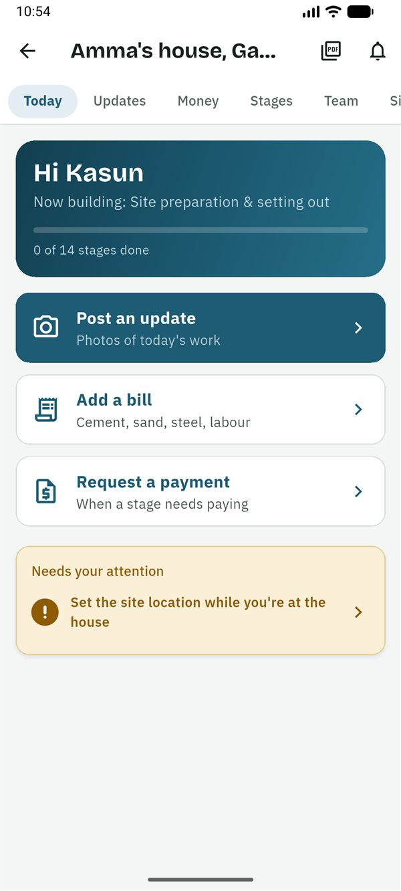
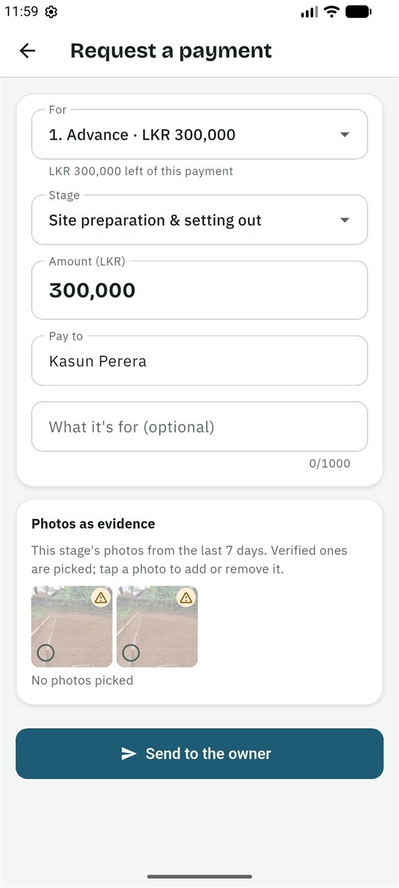
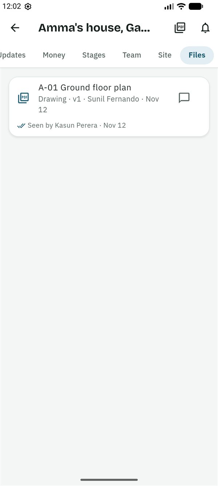

SiteProof
SiteProofGuides › Family member on site
Guide for the family member on site
සිංහලෙන් කියවන්න (Read in Sinhala)
This guide is for the family member on site: a parent, brother, sister or cousin who lives near the house and is the owner's eyes there. You post photos and bills, set the site location and ask for payments. You see the budget.
What you can and can't do
You can
- Post updates with photos and a voice note.
- Set the site location while you are at the house.
- Add bills, and ask for payments.
- Mark a payment paid, after paying through the bank.
- See the budget, every bill, every payment request and the payment schedule.
- Start and finish stages.
- Confirm you have seen a new drawing.
- Fix what a stage check found, and record a change to the work for the owner to decide (Plus).
- Comment on updates, bills, payments and drawings.
You can't
- Approve, question or reject a payment: the owner or a co-owner decides.
- Invite or remove people, or edit the project, its stages and budgets.
- Add drawings and documents.
- Ask someone else for a live check.
- Check or sign off a stage: nobody checks their own work.
Getting started
- The owner invites you. You get a message, usually on WhatsApp, in Sinhala and English, with a 6-character code. The code works once, for 7 days.
- Install SiteProof from Google Play. While SiteProof is being tested, only invited testers can install it. It is for Android phones for now.
- Choose සිංහල or English, then read the short welcome or tap Skip.
- Sign in: type your email address and tap Send code, then type the 6-digit code from the email and tap Verify. Or tap Continue with Google. There is no password.
- Under About you, fill in Your name and the Country you live in, then tap Continue.
- On the home screen, tap ⋮ → Join with a code (or the Join with a code button when you have no projects yet). Type the code and tap Check the code. The app shows who invited you, as Family member on site. Tap Join this project.
The project is on your home screen with an On site chip, under Following if you also have projects in other roles. It opens on Today.
The Today screen
Today greets you (Hi …), says what is being built (Now building: …) and has three big buttons:
- Post an update: photos of today's work.
- Add a bill: cement, sand, steel, labour.
- Request a payment: when a stage needs paying.
Below are any live checks for you, Needs your attention (things to do, such as setting the site location or making an approved payment) and Your payment requests, with what is waiting and what is paid.

Set the site location
SiteProof checks each photo against the site location, so set it first, while you are at the house.
- Stand in the middle of the plot, in the open, away from walls and roofs.
- Open the Site tab and tap I'm at the house site now.
- The app says how accurate your location is. Tap Save. It needs to be accurate to 30 m or better; if it isn't, move into the open, wait a moment and try again.
- The owner is asked to check the pin on a map and confirm it.
Until the owner confirms it, photos show a warning: "The site location isn't confirmed yet". If you set it in the wrong place, tap Set the location again.
Post an update
- On Today, tap Post an update.
- Tap Take photos. The camera shows the stage's last photo faintly over the view: line up with it, so the owner can compare from the same spot. Hide turns it off. Take up to 10 photos, then tap Done.
- Check the Stage (the current one is chosen for you).
- If you like, write What was done? (optional), or tap Record a voice note and say what the photos show (up to 2 minutes). Everyone in the project can play it; with Plus, it is also written out in Sinhala and English.
- Tap Post.
No signal? Post anyway. The update waits on the phone and uploads by itself when there is a connection. The time and place are recorded when you take the photo, and the owner sees "Captured offline, uploaded … later".
Photos can only be taken in the app, not picked from the gallery, so the owner can see when and where they were taken.
Add a bill
- On Today, tap Add a bill.
- Tap Take a photo of the bill. A bill photo is optional (day wages often have no bill) and records no location, because bills are often photographed at the shop.
- To save typing, tap Fill in from the photo: AI reads the amount, date, items and shop and fills in the empty fields. Check each one against the bill. (10 times a month on Free, 100 on Plus.)
- Fill in the Amount (LKR), the Category (Material, Labour, Equipment hire, Transport, Fees and approvals, Other), the Stage and the Date of the bill.
- Under More details (optional), add the item, quantity, unit and shop if you have them. With a quantity and unit, the owner sees the price per bag or per cube over time.
- Tap Save the bill. Like updates, it uploads by itself when there is signal.
Made a mistake? You can delete your own bill (⋮ → Delete this bill) within 24 hours, unless the owner has asked about it. If the owner asks about a bill, you see "The owner asked about 1 of your bills" in Needs your attention: answer in the bill's comments.

Request a payment, and mark it paid
Ask for a payment
- First post an update with photos of the work, so the owner can see it.
- On Today, tap Request a payment.
- If there is a payment schedule from the contract, For suggests the next agreed payment (for example "1. Advance") and fills in its stage and what is left of it. Choose another one, or Not in the schedule.
- Check the Stage and the Amount (LKR), and fill in Pay to (who receives the money) and, if you like, What it's for (optional).
- Under Photos as evidence, the stage's photos from the last 7 days are shown, with the verified ones picked. Tap a photo to add or remove it.
- Tap Send to the owner.
The stage shows Awaiting approval until the owner decides. If the owner asks a question, you see it in Needs your attention: answer in the request's comments. You can Cancel this request while it waits.

Make the payment and mark it paid
When the owner approves a payment, you are told there is a payment to make ("1 approved payment to make and mark paid").
- Pay through the bank. SiteProof doesn't send money.
- Open the request and tap Mark as paid.
- Add the Bank reference, a Photo of the slip, or both, and save.
Drawings, live checks, fixes and stages
Confirm a new drawing
When the owner or designer adds a drawing, or a new version of one, you see "New drawing to check: …" in Needs your attention.
- Open Files and tap the drawing to look at it.
- Tap Seen, I'll build from this. Opening the file alone doesn't count.
Everyone except viewers sees who has seen each drawing ("Seen by …") and who hasn't yet. A new version asks again, so nobody builds from an old one.

Answer a live check
The owner may ask for a live check: new photos, now. You get a notification, and Today shows "Live check from …" with what to show and how long is left.
- Open the check and tap Take the photos.
- If it shows a Code to write on paper, write the 4 digits on paper and show it in one of the photos.
- Post before the time shown, where there is signal. The check only counts if the photos reach SiteProof in time.
Fix what a stage check found
When the designer or the owner checks a stage and lists things to fix, you see "1 thing to fix on …" in Needs your attention.
- Open the stage. Under Stage check, each point to fix says what is wrong.
- When it is done, tap Mark fixed and take photos of the fix. They are posted as an update on that stage.
- When every point is fixed, whoever checked is asked to check again.

Start and finish stages
Open Stages, tap the stage, then Start this stage or Mark this stage as finished.
Record a change to the work (Plus)
When the work changes from what was agreed (a wider opening, better tiles, rock under the foundation):
- Open Money → Changes to the work → Record a change.
- Fill in What changes and, if you like, Why, and what was agreed (optional). Choose the stage, Costs more or Saves money, the amount, and the Extra days of work.
- Pick the Photos that show it and tap Save the change. The owner approves it, declines it or asks a question.
Good to know
Who sees what
- You see the budget, every bill and every payment request, like the owner. The contractor sees only their own bills and requests, never the budget. Viewers never see money.
- The owner's weekly summary and the check on each payment request ("Before you decide") are for the owners only.
- Everyone in the team sees the photos, the site location, the stages, comments and documents.
- People in the project see your name and role, and your phone number if you signed in with one, so they can call you or message you on WhatsApp.
The photo badges
- Verified on site: taken in the app inside the site's circle (usually 150 m) and uploaded soon after.
- Warning: something couldn't be fully checked, for example the site location isn't confirmed yet, the GPS was weak indoors, or the photo was taken a little outside the circle.
- Flagged: taken far from the site, with a simulated location, or the same photo posted twice.
For the best badge: allow location for SiteProof, take photos on the plot, and post soon after. Tap a badge, then What does this mean?, to see why it was given.
Plans
You use SiteProof free; only the owner pays. While SiteProof is being tested, every project has Plus free. Features marked (Plus) in this guide need the owner's Plus plan once plans start; on Free, bills and payment requests need Plus too.
Settings
On the home screen, tap ⋮ → Settings for the language, Notification settings, Lock with fingerprint or PIN, Help, Download my data and Delete my account.